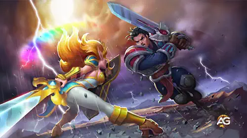

Bem-vindo ao Alexandre Games! Se você está procurando os melhores heróis de Hero Wars Alliance, veio ao lugar certo. Neste guia, revelaremos os 7 melhores heróis de cada facção em 2025, ajudando você a montar o time definitivo para o sucesso.
Seja você novo no jogo ou um jogador experiente que deseja otimizar sua formação, esta análise ajudará você a fazer o melhor investimento em seus heróis. Continue lendo para descobrir quais personagens dominam o campo de batalha e por que eles se destacam no meta atual!

Top 7 Melhores Heróis de Cada Facção em Hero Wars Alliance 2025, um jogo desenvolvido pela Nexters.
Facção do Mistério
Primeiro, a facção do Caminho do Mistério. Aqui estão meus 7 melhores heróis:
Dilúvio - Ela é incrivelmente forte e só vai melhorar com mais skins e talismãs. Cascade é indispensável para qualquer time.
Folio - Um herói promissor com grande potencial, especialmente após sua skin mais recente. Ele está ficando mais forte a cada dia.
Heidi - Essencial para combater times de esquiva com seu dano puro e habilidades de toxina. Se você enfrenta times de esquiva, Heidi é um divisor de águas.
Amira - Uma ótima contrapartida para dano crítico físico. Ela é confiável e se encaixa bem em muitas composições de time.
Andvari - Um guerreiro versátil que protege contra dano puro. Ele é especialmente útil em times combinados com heróis de esquiva.
Celeste - Uma forte heroína de suporte com capacidades de cura e dano. Ela é uma escolha sólida para qualquer time.
Ziri - Um tanque confiável que é difícil de derrubar. Ela é uma ótima adição para qualquer time que precise de uma linha de frente resistente.
Facção do Progresso
A seguir, a facção do Progresso (anteriormente Engenheiros). Aqui está minha classificação:
Nebula - Uma heroína equilibrada que aumenta os ataques físicos e mágicos dos aliados. Ela é indispensável para qualquer time.
Julius - Um excelente tanque que fornece escudos e dano crítico. Ele é um grande protetor para o seu time.
Sebastian - Aumenta o dano crítico dos aliados e enfraquece os tanques inimigos. Ele é um herói de suporte de alto nível.
Lara Croft - Uma heroína forte com grande utilidade. Ela é versátil e se encaixa bem em muitos times.
Astrid - Uma heroína versátil que é ótima tanto para ataque quanto para defesa. Ela é uma escolha sólida para qualquer time.
Ginger - Uma causadora de dano confiável que pode derrubar inimigos rapidamente. Ela é uma ótima adição para qualquer time.
Isaac - Forte contra times de dano mágico. Ele é um ótimo contraponto para composições mágicas pesadas.
Facção do Caos
Agora, vamos falar sobre a facção do Caos:
Kayla - Uma heroína que muda o jogo e domina batalhas. Ela é indispensável para qualquer time do Caos.
Aidan - Funciona perfeitamente com Kayla como um herói de suporte. Juntos, eles formam uma dupla mortal.
Peech - Uma nova heroína com grande potencial e sinergia com times do Caos. Ela é uma para ficar de olho.
Astaroth - Um tanque indispensável para iniciantes e jogadores avançados. Ele é confiável e versátil.
Machadinha - Outro tanque forte que agora é mais fácil de obter. Ele é uma ótima adição para qualquer time.
Jorgen - Rouba energia dos inimigos, tornando-o um herói de suporte essencial. Ele é fundamental para controlar o campo de batalha.
Xe’sha - Forte em Hidras e Arenas, com a chegada da nova heroína Peech, espera-se que ela suba de classificação e se torne ainda mais forte.
Facção da Honra
Para a facção da Honra, aqui estão minhas principais escolhas:
Tristan - Um excelente herói para investir. Ele é forte e versátil, encaixando-se bem em muitos times.
Fafnir - Fornece buffs de ataque físico e escudos para o time. Ele é um ótimo herói de suporte.
Soleil - Um novo herói que já está causando impacto no meta. Ele é forte e se encaixa bem em muitos times.
Helios - Contrabalança dano crítico físico e mágico. Ele é uma ótima adição para qualquer time.
Luther - Um tanque forte que pula em times inimigos e causa caos. Ele é um ótimo disruptor.
Qing Mao - Uma heroína promissora que está ganhando popularidade. Ela é uma escolha sólida para qualquer time.
Artemis - Uma causadora de dano confiável que é ótima para derrubar inimigos rapidamente.
Facção da Natureza
Passando para a facção da Natureza:
Tartarugas Ninja - Um novo e poderoso herói, embora precise de melhor sinergia em equipe. Eles são fortes, mas ainda estão encontrando seu lugar no meta.
Yasmine - Uma assassina letal que sempre é uma das principais escolhas. Ela é ótima para eliminar alvos-chave.
Cogu e Mélio - Um excelente tanque que está ficando mais forte a cada dia. Eles são um ótimo investimento para qualquer time.
Oya - Funciona muito bem com Yasmine e Kayla. Ela é uma heroína forte e versátil.
Alvanor - Um herói forte que se encaixa bem em times da natureza. Ele é um ótimo herói de suporte.
Aurora - Outra excelente opção de tanque. Ela é confiável e difícil de derrubar.
Chabba - Um tanque confiável para o seu time. Ele é uma ótima adição para qualquer linha de frente.
Facção da Eternidade
Finalmente, a facção do Caminho da Eternidade:
Dante - Um herói em que você pode investir sem hesitação. Ele é forte e versátil.
Octavia - Fornece chances de esquiva aos aliados, tornando-a uma ótima heroína de suporte.
Iris - Causa dano massivo, embora seja um pouco fraca defensivamente. Ela é ótima para o ataque.
Corvus - Um dos melhores tanques do jogo. Ele é resistente e confiável.
Morrigan - Uma heroína que contrabalança habilidades de ressurreição e cura. Sua super skin+ adiciona reflexão mágica, permitindo que ela esquive e reflita dano mágico normal e crítico, tornando-a um pesadelo para times mágicos pesados.
Tempus - Controla o tempo, acelerando aliados e desacelerando inimigos. Ele é um ótimo herói de suporte.
Sem Rosto - Um herói versátil que imita as habilidades de outros heróis, adaptando-se a qualquer situação. Perfeito para times que precisam de flexibilidade e estratégias de combinação.
Conclusão
Isso conclui nossa lista dos 7 melhores heróis de cada facção em Hero Wars Alliance para 2025! O meta está sempre evoluindo, então não deixe de se manter atualizado e adaptar sua estratégia conforme necessário. Continue evoluindo seus heróis e fazendo investimentos inteligentes para dominar o jogo!
Quer mais dicas e guias? Fique ligado para as nossas atualizações mais recentes sobre Hero Wars Alliance!
Sugestões de Vídeo:
Vídeo: Os 7 Melhores Heróis de Cada Facção em Hero Wars Alliance 2025
Você gostou do nosso Guia dos 7 melhores heróis de cada facção em Hero Wars Alliance 2025.? Há algo que não entendeu ou gostaria de sugerir mudanças? Convidamos você a se juntar à nossa sessão de comentários na página do Alexandre Games Blog. Não hesite em expressar sua opinião, clarificar suas dúvidas e compartilhar sua sugestões. Clique no botão abaixo para começar:
 Novos Atributos em Hero Wars Alliance
Novos Atributos em Hero Wars Alliance Top 7 Combos de Hero Wars Alliance 2025
Top 7 Combos de Hero Wars Alliance 2025 Sinergia das Tartarugas Ninja - Hero Wars
Sinergia das Tartarugas Ninja - Hero Wars